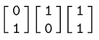

Homework 2
Last updated: Mon, 15 Sep 2025 11:23:29 -0400
Out: Mon Sept 15, 12:00pm EDT (noon) Due: Mon Sept 22, 12:00pm EDT (noon)
Note: Assignments are not officially "released" until—
and are subject to change without notice up to— the indicated "Out" date and time. If an assignment is posted early, students may look ahead but are responsible for ensuring that they are always working with the most recent version of the homework.
This assignment continues to explore deterministic finite automata (DFAs) and regular languages.
Homework Problems
DFAs and Regular Languages (12 points)
Is It A Regular Language? (12 points)
DFAs Can Do "Real" Computation (10 points)
README (1 point)
Maximum: 35 points
Submitting
Submit your solution to this assignment in Gradescope hw2. Please assign each page to the correct problem and make sure your solutions are legible.
A submission must also include a README containing the required information.
1 DFAs and Regular Languages
Let the language recognized by DFA T from Homework 1 problem DFA Formal Description be the following set of strings:
L_T=\{\texttt{420},\texttt{620}\}
Prove that the language L_T is a regular language.
Important: Before attempting the proof, make sure to understand what this problem is asking. This means you must know the precise definitions of the terms used in this problem, and all notation, before you can begin solving this question.
For example, make sure you know the precise formal definition of: string, language, recognize, regular language, etc.
Your proof must be in the form of a Statements and Justifications table, as presented in class.
If your answer includes designing a DFA, you may submit a state diagram instead of a formal description of the machine.
You may also refer to DFAs already created in class or previous homework problems, if appropriate. There is no need to re-define a previously-defined definition.
To "prove" that a DFA recognizes a language, the justification (as shown in lecture) must be a three-column table showing:
three strings that are both "in the language" and "accepted by the DFA", and
three strings that are not "in the language" and not "accepted by the DFA".
The key is that for each example string, the entries in the "in the language?" column and the "accepted by DFA?" column should match. The strings should ideally "test" as many different transition paths through the DFA as possible. (This should also tell you whether the strings you came up with in parts 1 and 2 are "good" examples or not.)
2 Is It A Regular Language?
Here is a language definition:
L_{AC} = \{w\mid w\textrm{ is a valid area code}\}
You may assume that strings in the language contain only characters from alphabet \{\texttt{2},\texttt{3},\texttt{4}\}.
Come up with 3 strings in the language.
Come up with 3 strings not in the language.
For this problem, for parts 1 and 2, you are allowed to post examples to Piazza for clarification if you are unsure.
Prove that the language is a regular language.
Important: Before attempting the proof, make sure to understand what this problem is asking. This means you must know the precise definitions of the terms used in this problem, and all notation, before you can begin solving this question.
For example, make sure you know the precise formal definition of: string, language, regular language, etc. Further, you need to know how to read the set (builder) notation above and what it means for something to be in and not in a set.
Your proof must be in the form of a Statements and Justifications table, as presented in class.
If your answer includes designing a DFA, you may submit a state diagram instead of a formal description of the machine.
You may also refer to DFAs already created in class or previous homework problems, if appropriate. There is no need to re-define a previously-defined definition.
To "prove" that a DFA recognizes a language, the justification (as shown in lecture) must be a three-column table showing:three strings that are both "in the language" and "accepted by the DFA", and
three strings that are not "in the language" and not "accepted by the DFA".
The key is that for each example string, the entries in the "in the language?" column and the "accepted by DFA?" column should match. The strings should ideally "test" as many different transition paths through the DFA as possible. (This should also tell you whether the strings you came up with in parts 1 and 2 are "good" examples or not.)
3 DFAs Can Do "Real" Computation
Here is an example showing that DFAs can perform "real" computation.
Assume that the following is an alphabet of "domino" symbols (one could easily use unicode characters to represent such an alphabet):

Now assume we have a sequences of such dominoes, where the top row of digits are interpreted together as a binary number (leftmost digit is most significant, i.e., "big-endian"). The bottom row of digits are also interpreted in the same way.
For example in the following domino sequence:

the "top row" binary number would be 011 (or 3 in base ten) and the "bottom row" binary number would be 101 (5 in base ten).
Let L_{neq} be a language consisting of sequences of dominos where:
L_{neq} = \{w\mid w \textrm{ is a sequence of dominoes where top row} \neq \textrm{bottom row}\}
Come up with 3 strings in the language.
Come up with 3 strings not in the language.
Prove that L_{neq} is a regular language.
Your proof must be in the form of a Statements and Justifications table, as presented in class.
If your answer includes designing a DFA, you may submit a state diagram instead of a formal description of the machine.
You may also refer to DFAs already created in class or previous homework problems, if appropriate. There is no need to re-define a previously-defined definition.
To "prove" that a DFA recognizes a language, the justification (as shown in lecture) must be a three-column table showing:three strings that are both "in the language" and "accepted by the DFA", and
three strings that are not "in the language" and not "accepted by the DFA".
The key is that for each example string, the entries in the "in the language?" column and the "accepted by DFA?" column should match. The strings should ideally "test" as many different transition paths through the DFA as possible. (This should also tell you whether the strings you came up with in parts 1 and 2 are "good" examples or not.)